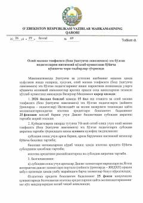

V6Oliy malaka toifali pedagoglarga uy-joy uchun ipoteka subsidiyasini ajratish tartibi to'g'risidagi qaror.
Ushbu hujjat oliy malaka toifasiga (bosh o'qituvchi lavozimiga) ega bo'lgan va kamida 15 yil ish stajiga ega pedagoglarni ijtimoiy qo'llab-quvvatlash, ularga uy-joy sotib olish uchun ipoteka kreditlari boshlang'ich badalining bir qismini qoplab berish tartibini belgilaydi. Qarorda subsidiya ajratish shartlari, arizalarni ko'rib chiqish bosqichlari va mas'ul vazirliklar vazifalari batafsil bayon etilgan.